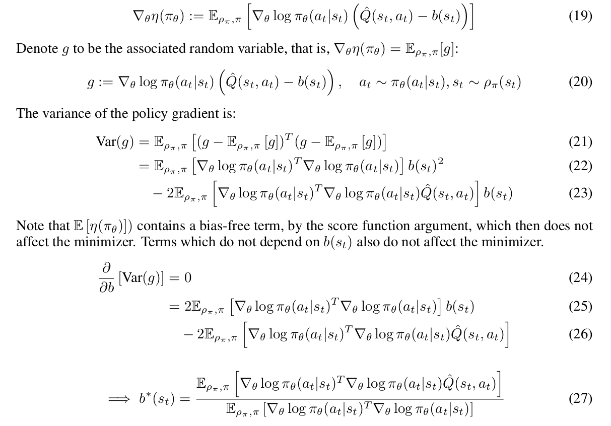
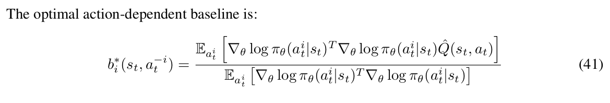
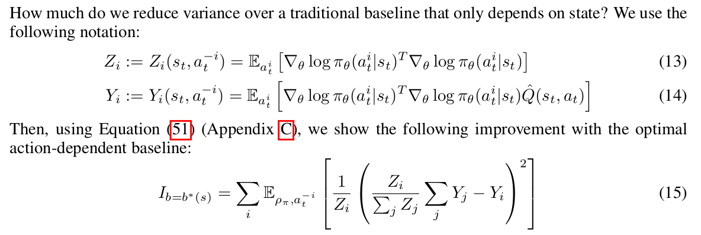
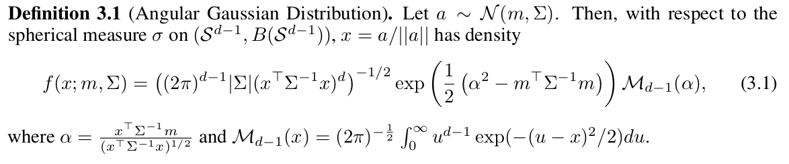
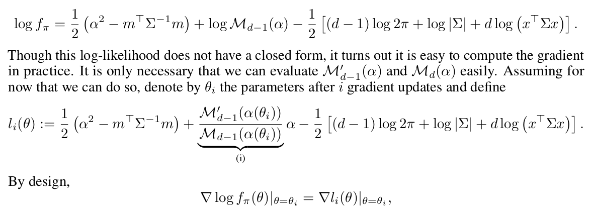
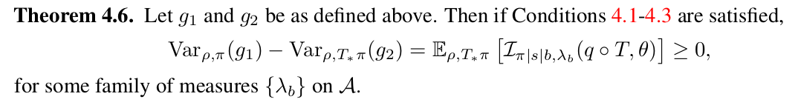
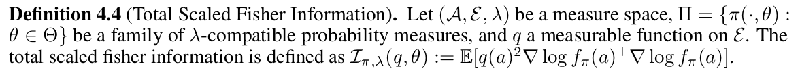
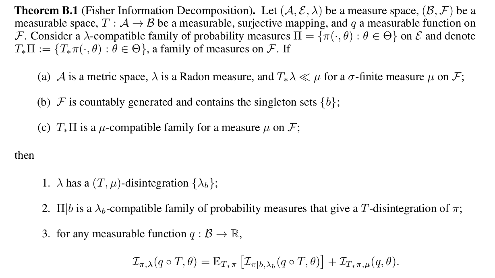

总结两篇ICLR上的硬核文章，内容都与policy gradient系列方法的variance estimation有关，一篇来自Pieter Abbeel组，2018年3月起挂在ArXiv上；另一篇出自腾讯AILab，发表于ICLR-2019（仰望大佬
Variance Reduction for Policy Gradient with Action-Dependent Factorized Baselines
文章研究的问题还是比较general的：当action可以按维度分成几个相互独立的factor的时候，作者提出可以通过引入与action相关的baseline来降低policy gradient的方差
The key insight of this paper is that when the individual actions produced by the policy can be decomposed into multiple factors, we can incorporate this additional information into the baseline to further reduce variance.
Preliminaries
解释几个关键的名词
1. Baseline
众所周知policy gradient的一般形式为
其中
这就是最原始的REINFORCE形式，但REINFORCE梯度估计具有很高的方差，一种解决方案是在不影响原本梯度方向的前提下加一个只取决于state的baseline function
2. Bias-free for baseline functions
当baseline只取决于state时，baseline无条件满足bias-free条件
本文中作者之所以反复提到bias-free，是因为文章最主要的改进是将$b(s_{t})$改成了$b(s_{t},a_{t}^{-i})$，即标题所说的action-dependent baseline
3. Baselines with minimum variance
什么样的$b(s_{t})$可以带来最小的方差？

一个简单的凸二次优化，最终的结果中，分母上就是FIM的trace，分子上是一个带有Q-function rescale的FIM trace
实际编程的时候，由于这个最优baseline的计算量太大，所以大多情况下人们采用备选方案——通过supervised training得到一个value function $v(s_{t})$ —— 这种方法被广泛应用在各种policy gradient变体算法中
Action-Dependent Baselines
Assumption
Action $a_{t}$ 可以分解成几个互相不关联的factors $a_{t}^{i},a_{t}^{j},…$，不同的factors之间满足
仔细想想这个假设应该还是比较强的，因为作者并不是在假设不同的action factors是条件独立的，而是假设不同action factors对于参数的梯度永远是正交的。作者举出了几个满足该假设的例子
- Multi-agent任务中不同的policy之间条件独立 => 不同policy之间条件独立等价于policy对于参数的梯度正交吗？
- Partially-observable环境下，当每个agent观测到的state完全没有交集 => 同上
- 对不同的action factors采用不同的function approximators，且这些function approximators完全不存在参数共享 => 参数不共享说明参数不在一个空间里，不在同一个空间能做内积吗？
Optimal baselines
这里的推导用到了上面的假设，除此以外推导过程与上面的凸二次优化类似，得到结果

满足假设条件时，定量描述，采用action-dependent baseline比原始的state-dependent baseline方差小多少？

作者文中称当Q-function相对action维度很不平滑时，这个improvement会很大
个人觉得这个形式太复杂，意义不是很大，于是自己沿着这个结果推了个更加没什么卵用的upper bound（如果是lower bound就好了
Marginalized Q baseline
依然难算的baseline，作者在这一节里考虑如何将这个baseline用在实际算法中，提出两种方案
- Monte-Carlo marginalized baseline: 用Monte-Carlo算积分积掉action $a_{i}$，这个idea在我最早了解到multi-agent的时候就想到过，当时是从PGM的角度去想，觉得把其他agent的action积分掉是再正常不过的做法，应该早就有人做过
- Mean marginalized Q baseline: 这个idea就值得玩味了，这里作者直接用$b(s_{t},a_{t}^{-i})=Q_{\pi}(s_{t},a_{t}^{-i},\mathbb{E}_{\pi}[a_{t}^{i}])$来加快计算速度。假设这个Q-function学的非常理想，且policy $\pi$的输出是一个高斯分布，那么取$a_{t}^{i}$的均值点，baseline的形势会变成$b_{i}=\max_{a_{j}\in{\mathcal{A}^{-i}}}Q_{\pi}(s_{t},a_{t}^{-i},a_{j})$，和Monte-Carlo完全不是一码事
实际上按照作者在实验部分的说法，两者的效果很接近，后者要比前者稍高一点点，这让我有点费解
Marginal Policy Gradients: A Unified Family of Estimators for Bounded Action Spaces with Applications
又是来自Tencent AILab大佬Han Liu组的paper，文章的理论部分写的非常严谨，用到了大量的测度论知识，给人一种Princeton数学科班生对我等数学渣降维打击的感觉。由于文章本身就已经不是很易懂了，这里尽可能从intuition的角度出发解释下个人对文章的理解，想要更严谨还是去读原文吧
这篇文章研究的是policy gradient方法的一个细节问题：典型的policy gradient算法，包括TRPO和PPO在内，常常将policy network $\pi(a|s)$参数化成一个高斯分布的形式，然后从$\pi(a|s)$中采样得到实际与环境交互的action。问题在于，很多环境的action space是定义在一个特定的区间内的（譬如Pendulum-v0中action space是[-2,2]），从高斯分布中采样可能会导致action不在这个区间内，这时常见的做法是
- 允许环境去裁剪action（打开OpenAI gym的源码他们就是这样做的） => 作者声称，这样的做法会带来不必要的高方差
- Clip the action and update according to the clipped action => 这种做法是off-policy的
作者举得另一个例子是在RTS游戏或机器人导航任务中，action space常常指的是英雄或机器人移动的方向，这个方向的值是连续的，不是像Atari那样的上下左右四个离散动作，这时如果我们还是用老办法让$\pi(a|s)$输出$\mathcal{N}(\mu,\Sigma | \mu\in{(0,2\pi)})$然后做clipping，由于角度的空间不是$\mathbb{R}^{2}$，i.e. $\epsilon=2\pi+\epsilon$，那么对于$\pi(a|s)$的概率分布$\mathcal{N}({\mu,\Sigma})$而言，$\mathbb{P}(\mu-\epsilon)\neq{}\mathbb{P}(\mu+\epsilon),\forall{\mu\neq{\pi}}$，针对这个问题有两种解决思路
- 与上面的思路类似，允许环境对action重新参数化：采样$a\sim\mathcal{N}(\mu,\Sigma)$，其中$\mu\in{\mathbb{R}^{2}}$，与环境交互的时候执行$a/||a||$ => 这个方法可以推广到$\mathbb{R}^{d}$高维空间中，问题在于，我们训练的policy有$d$个自由度，而环境实际执行的动作只有$d-1$的自由度，可以想到这个方法的方差一定很高，收敛也会比较慢
- 作者在Section 3中提出的新方法，叫做Angular Policy Gradient，思路也比较直观，就是用坐标变换把$\mathbb{R}^{d}$空间中由$a/||a||$所确定的density直接映射到spherical measure $\mathcal{S}^{d-1}$上去，作者将$\mathcal{S}^{d-1}$空间中的这个density称为Angular Gaussian distribution
Angular Policy Gradient

这个让人看着头大的式子里，最让人头大的莫过于这个$\mathcal{M}_{d-1}(\alpha)$了，这货是一个没有closed form的积分，所幸它的数学性质还不错，用分部积分可以得到
看到这个公式就发现可以用动态规划求解，边界条件为
其中$\mathbb{P}$和$p$分别是$\mathcal{N}(0,1)$的cdf和pdf，这个DP的复杂度为$O(d)$
实际做的时候对log probability作者采用了与TRPO相同的处理方法

Marginal Policy Gradient Estimators
把上面讨论的两种解决policy输出与action space不同的思路数学抽象一下，设$Q(s_{t},a_{t})=\mathbb{E}_{\pi}[\sum_{i=t}^{\infty}\gamma^{i-t}R(s_{i},a_{i})]$为state-action function，把$\pi$当成一个probability measure，$T_{*}\pi$为在映射$T$下$\pi$的push-forward measure，忽略文章中各种测度相关的假设（这些假设在现实环境下显然是无条件成立的）
- $g_{1}=Q(T(a),s)\nabla\log{f_{\pi}(a|s)}$: 先由环境输出action，与环境交互时经映射T将action映射到环境所要求的action space中去
- $g_{2}=Q(a,s)\nabla\log{f_{T_{*}\pi}(a|s)}$: 直接将policy network的参数化形式经$T$映射到真正的action space中去，然后直接采样与环境交互
整个Section 4中作者讨论的核心问题是：
- $g_{1}$与$g_{2}$哪个梯度估计的variance更大 => 结论当然是$Var(g_{1})\geq{Var(g_{2})}$，不然Section 3里面推导了半天的angular policy gradient不就没用了？
- 定量分析，两个梯度估计的方差之间差距有多大 => Theorem 4.6中作者给出的结果是

其中$\mathcal{I}(q,\theta)$为Total Scaled Fisher Information：

可以想到当$q(a)=1$时这个定义等价于原始形式的Fisher information的trace，众所周知Fisher information是某个概率分布期望下梯度的方差，其实Theorem 4.6中数学期望下Fisher information的形式就是stochastic gradient的方差的trace（加上了在策略分布下随机游走的平稳分布$\rho(s)$积分，数学期望里面的outer product变成了inner product），这个trace之前常常被用来分析SGD的方差，与普通形式的方差拥有相同的性质
The implication of Theorem 4.6 is that if there is some information loss via a function T before the action interacts with the dynamics of the environment, then one obtains a lower variance estimator of the gradient by replacing the density of $π$ with the density of $T_{∗}π$ in the
expression for the policy gradient.
Theory and Methodology
1. The law of total variance
Refer to Wikipedia for detailed description
In probability theory, the law of total variance, or variance decomposition formula, states that if $X$ and $Y$ are random variables on the same probability space, and the variance of Y is finite, then
In actuarial science, specifically credibility theory, the first component is called the expected value of the process variance (EVPV) and the second is called the variance of the hypothetical means (VHM).
不难证，可以自己证一下练练手
2. Fisher information decomposition
注意以下说的Fisher information指的全部都是total scaled fisher information
Fisher information既然是log likelihood的一阶导的方差估计，那么Fisher information也显然可以分解

有了这个结论，theorem 4.6就比较显然了
3. Other details
- 作者一上来就在related work里面说Fujita & Maeda在ICML-2018发表的CAPG文章中理论分析部分是错的，实在是大佬气场，三个审稿人居然没有一个对这一点提出质疑（或许审稿人都是直接跳过related work的
- 果然实验又是在王者荣耀上做的，非腾讯内部员工根本不可能复现，希望以后去了腾讯可以有机会接触这方面的东西吧，不知道AILab这些文章中用到的方法是否真的有应用在AI平台部设计的AI bot中
- 虽然作者声称这是第一个在RL方向上探索action space为方向的工作，我个人感觉这个问题在robotics里应该非常常见，把欧式空间中的高斯分布映射到spherical measure的思路也很直观，如果说做robotics的人都没有在这个方向上探索过，那足以说明robotics领域对于RL持有何等保守的态度